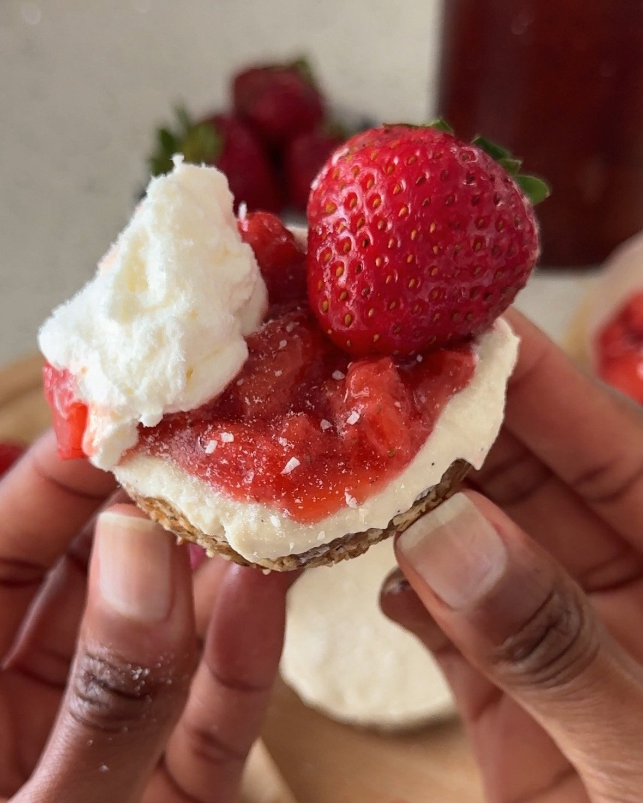
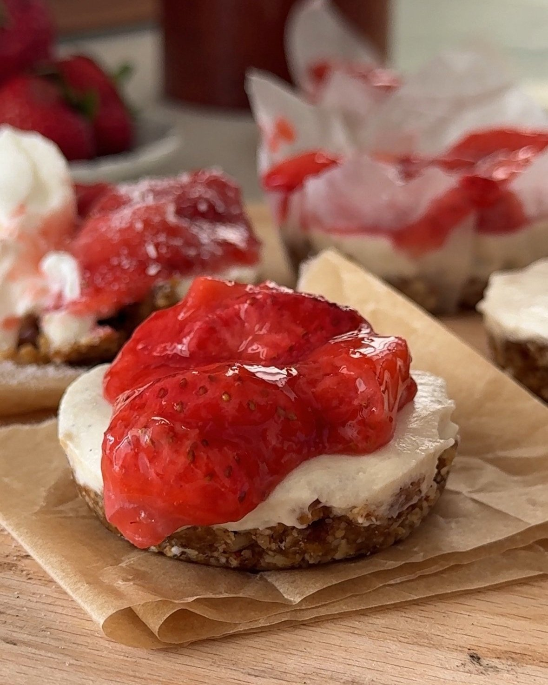

Making these strawberry cheesecake cups is super easy! You’ll start by preparing the crust. Pulse all of the crust ingredients together in a food processor until it turns crumbly but sticky. If the crust is too loose, add another date or a bit more maple syrup so that it sticks together a bit more.
Spoon the crust into each of the cupcake liners, and press them firmly into the bottom so it's well packed. Place the pan in the freezer while you make the filling.
To make the vegan cheesecake filling, start by draining the cashews. Add the remaining cheesecake ingredients into a blender and blend on high speed until smooth. Once the filling is completely smooth, pour it evenly over the cupcake crusts. Place the cheesecakes in the freezer for one hour, and then transfer to the fridge for another hour until firm.
Meanwhile, prepare the strawberry topping. Place the strawberries in a pan over medium heat. Lightly mash the strawberries with a potato masher or the back of a fork to press out some of the juices. Once the juices start to simmer, turn the heat to low and stir in the cornstarch slurry. Add in a little bit of water at a time if the juices begin to evaporate.
After 5 minutes, stir in the lemon zest, vanilla, and sugar (if using). Cool the strawberry topping completely before spooning it on top of the cheesecakes when ready to serve.

KEY INGREDIENTS
gluten free oats
raw almonds
raw pecans
dates
almond butter
Coconut milk
maple syrup
strawberry
raw cashews
Lemon juice

HOW LONG DOES THIS TAKE TO MAKE?
There are three main steps to making these easy strawberry cheesecakes at home:
Mixing the crust, which takes about 10 minutes
Whipping the filling, which takes about 10 minutes
Making the caramel, which takes about 10 minutes
Hands-on time for these cheesecakes will take about 30 minutes to make. It will need to set in the freezer and the fridge for about two hours, so keep that in mind, too.